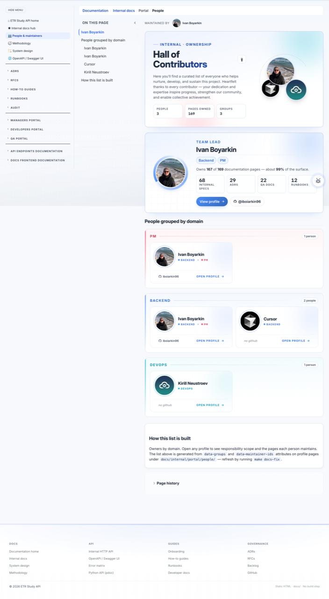
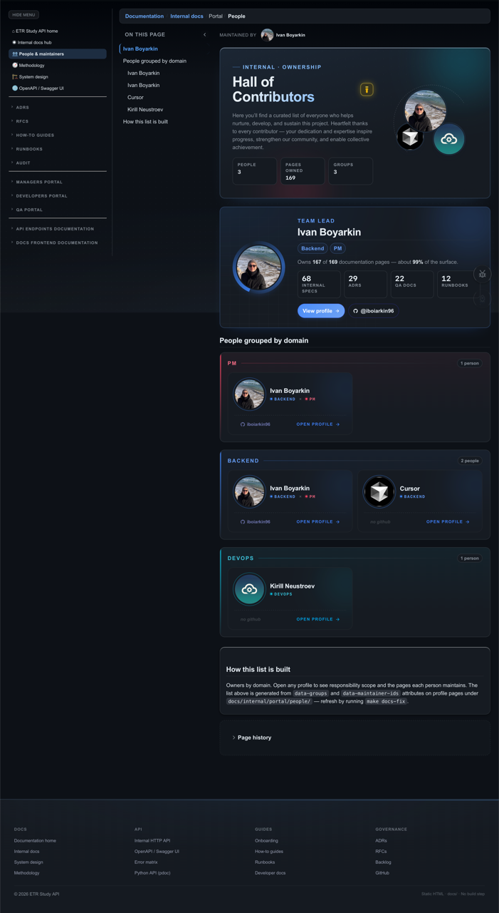
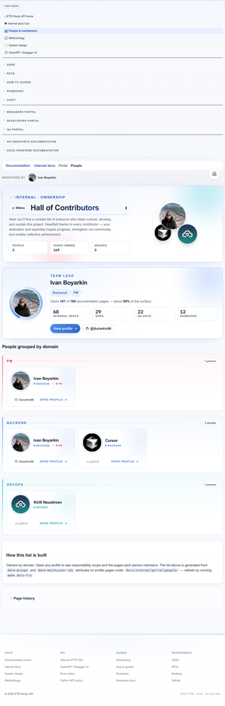
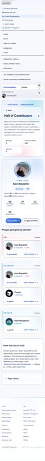
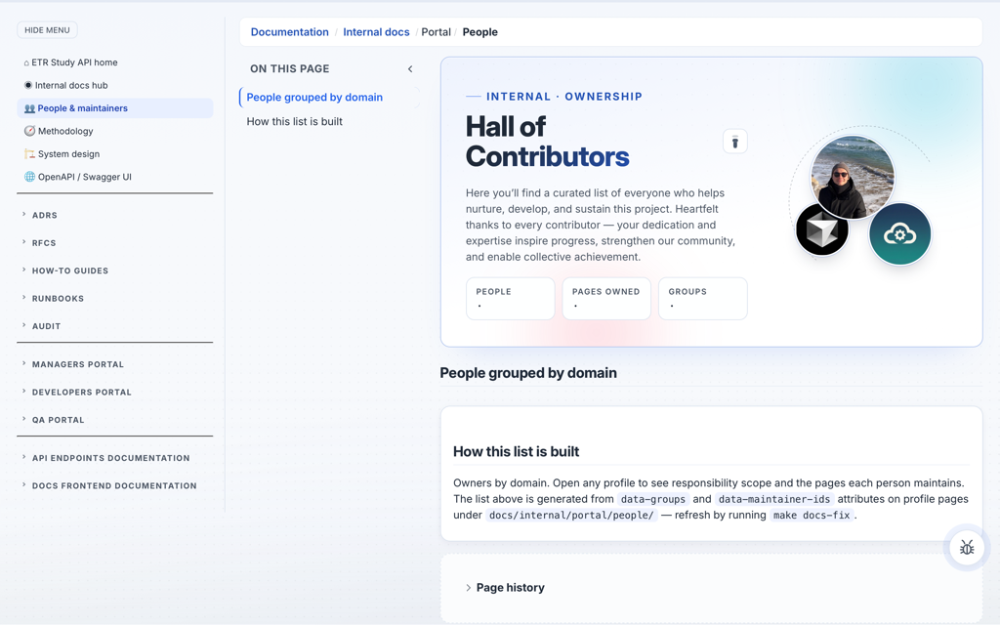

At a glance
Sister surfaces: the lightweight #portal-people-mount on
internal hub README shares the same
__DOCS_PORTAL_DATA__ source and is rendered by the same module
(docs-internal-meta.js).
This page is the "premium" gallery; the hub mount is the "compact" variant.
Glossary: any unfamiliar term in this spec is defined in the docs frontend glossary.
Visual gallery
Screenshots live in ./assets/ next to this file and are captured headlessly via
scripts/capture_screen_specs.py portal-hall-of-contributors
(Playwright · WebKit). Re-run the capture in the same PR that changes the screen. Click any image to open
it full-size.





·; spotlight + gallery slots empty)Anatomy
Five regions, top to bottom. Each is independently driven by __DOCS_PORTAL_DATA__; the page
renders nothing static below the hero.
- 1Hero (
.portal-hero) — eyebrow ("Internal · Ownership"), gradient title ("Hall of Contributors"), lead copy, three ownership tickers (People / Pages owned / Groups), and decorative avatar art on the right (three offset chips). Decorative orbs and a dot-grid sit behind the copy. - 2Tickers (
[data-portal-ticker-target]) — three live counters paint after data hydrates:people,pages,groups. Until then, each shows·. - 3Spotlight (
#portal-spotlight-mount) — single card promoting the top maintainer (highest page-ownership count): avatar, name, role chips, lead copy with raw + percent ownership, four section stats (top buckets), CTA + GitHub link. Tone driven by--portal-tonefrom the maintainer's first group. - 4Group strip (
.portal-strip× N) — one strip per group (PM, Backend, DevOps), each with eyebrow + count + a grid of editorial.portal-personcards. Card has avatar, display name, role chips with their own per-group tone, and a GitHub link. - 5Skeleton (
.portal-skeleton-grid) — three placeholder spans rendered into the gallery mount before__DOCS_PORTAL_DATA__hydrates, with a minimum visible duration ofSKELETON_MIN_VISIBLE_MS = 300ms (avoids a flash of empty content on warm caches).
Layout map
- Sidebar (
.internal-layout__sidebar): standard internal sidebar mounted byinternal-sidebar.js. - Top nav (
#docs-top-nav): rendered bydocs-nav.js; carries breadcrumbs. - Hero (
.portal-hero): copy column on the left (eyebrow / title / lead / tickers), art column on the right (three avatar chips arranged around a ring). Layered backgrounds: gradient surface + blurred orbs + dot-grid. - Spotlight slot (
#portal-spotlight-mount): wide card; hidden untilrenderPortalSpotlightfills it. - Gallery slot (
#portal-people-gallery-mount): vertical stack of group strips, each containing a CSS grid of person cards. - Page meta: shared
#docs-page-meta-mount(hidden by default); maintainer chip surfaces only when explicitly requested viadata-page-meta="show".
Behavior matrix
| Element | State | Trigger | Outcome | Notes |
|---|---|---|---|---|
| Tickers | Pre-hydrate | Initial paint, before __DOCS_PORTAL_DATA__ resolves |
Each [data-portal-ticker-target] shows the literal ·. |
Static placeholder character — no animation. |
| Tickers | Hydrated | paintPortalTickers(totals) fires after data resolves |
Numeric value replaces · via textContent. |
No count-up animation — values appear in one frame. |
| Gallery mount | Skeleton | mountPortalPeopleGallery entry; data not yet ready |
.portal-skeleton-grid with three placeholder spans is rendered. |
Held visible for at least SKELETON_MIN_VISIBLE_MS = 300 ms. |
| Gallery mount | Rendered | Skeleton min-visible elapsed AND data ready | Strips + person cards swapped in via a single innerHTML assignment. |
One paint, no per-card mount churn. |
| Person card | Idle | Pointer not over card | Tonal corner gleam at low intensity; left-edge tone signature hidden. | Tone driven by --portal-tone from the person's first group. |
| Person card | Hover | :hover on .portal-person |
Corner gleam intensifies; left-edge tone signature fades in. | Pure CSS — no JS hover handlers. |
| Person card | Activate | Click/tap or Enter on the wrapper <a> |
Navigates to internal/team/people/<slug>/index.html. |
The inner .portal-person__github link calls event.stopPropagation() so the GitHub click doesn't route to the profile. |
| Spotlight CTA | Activate | Click on "View profile" | Navigates to the same per-person profile. | Avatar link is tabindex="-1" + aria-hidden="true" so the CTA is the focusable target. |
Timing budget
- 0 ms
- HTML paints with hero copy fully populated; tickers show
·; gallery slot renders.portal-skeleton-grid. - +~50 ms
docs-portal-data.js+docs-internal-meta.jsfinish loading (deferred); data totals computed.- +~70 ms
- Spotlight card paints into
#portal-spotlight-mount; tickers paint viapaintPortalTickers. - +300 ms (cap)
- Gallery skeleton swaps for the rendered strips, even if data resolved earlier (
SKELETON_MIN_VISIBLE_MSfloor — avoids flash on warm caches).
Data contract
Mounts (HTML)
#portal-spotlight-mount— top-maintainer card target.renderPortalSpotlight(top, totals, fromDir)writes into it.#portal-people-gallery-mount— group-strip + person-card grid target.renderPortalPeopleGallery(...)writes into it.#portal-coverage-mount— reserved for the coverage breakdown card; presence is detected, absence is silent.[data-portal-ticker-target="people|pages|groups"]— each is one ticker; multiple instances per key are allowed (paintPortalTickerswrites to all matching nodes).
Body-level metadata
body[data-maintainer-ids]— comma-separated maintainer ids (consumed bydocs-internal-meta.jspage-meta strip).body.internal-layout+body.portal-people-page— layout class + page-scoped class for any portal-people-only CSS.body[data-spec-page="screen"]— front_spec_lint skip marker.
Data source (window.__DOCS_PORTAL_DATA__)
Loaded from services/frontend/portal/assets/docs-portal-data.js (auto-generated; do not edit by hand).
people: [{ personId, slug, displayName, github, photo, groups: ["pm"|"backend"|"devops"], ... }, ...]maintainerPages: { [personId]: [{ path, title }, ...] }— paths areservices/portal/-relative.
Tone palette
PORTAL_TONE_BY_GROUP = { pm: "rose", backend: "blue", devops: "teal" }— group → tone.PORTAL_TONE_HEX— tone → hex (blue #3b82f6,teal #06b6d4,rose #f43f5e,amber #f59e0b,green #10b981,purple #0ea5e9,mono #64748b).- Applied as
data-portal-tone="<tone>"+ inline--portal-tone:<hex>on.portal-spotlightand.portal-person;--role-toneon per-role chips inside.portal-person__role.
Section labels
PORTAL_SECTION_LABELS = { adr: "ADRs", rfc: "RFCs", runbooks: "Runbooks", qa: "QA docs", audit: "Audits", developer: "SWE guides", howto: "How-to guides", internal: "Internal specs", openapi: "OpenAPI", backlog: "Backlog" }portalSectionBucket(path)derives the bucket from the first path segment; unknown buckets fall back to a Title-cased version of the segment.
Responsive behavior
Uses the canonical viewport breakpoints
(≥1025 / 761–1024 / ≤760). The 14 non-canonical breakpoints
removed in the 2026-05-07 audit sweep included three from this stylesheet.
- Desktop (≥1025 px): hero is two columns (copy ~1.45fr · art ~0.95fr); strips paint a multi-column grid of person cards (
auto-fillwithminmax(280px, 1fr)). - Tablet (761–1024 px): hero collapses to one column with the avatar art floating below the copy; strip grid drops to two columns; sidebar collapses into the standard internal-layout drawer.
- Mobile (≤760 px): hero copy uses condensed padding (
clamp(22px, 3.4vw, 38px)floors at 22 px); avatar art is hidden; strip grid drops to one column (.portal-people__list { grid-template-columns: 1fr }atmax-width: 760px); spotlight CTA + GitHub stack vertically.
Mobile acceptance checklist
Run on iPhone 17 Pro Max (≈440 CSS px) and iPhone SE (375 CSS px). The full normative list lives at UI motion & adaptivity § Mobile contract.
- No body-level horizontal scroll. The hero gradient + dot-grid never extend past the viewport.
- Body prose computed font-size ≥ 15 px on mobile (canonical 8-tier ladder; no per-tier override).
- Hero tickers reflow to two columns at ≤760 px (matches the home-hero-tickers breakpoint).
- Sticky page-title row does not occlude the first paragraph.
- Person cards remain tappable: minimum 44 × 44 CSS px tap target on the wrapper
<a>.
Browser & device support
| Engine / device | Minimum version | Verified state | Fallback |
|---|---|---|---|
| Chromium (Chrome, Edge, Brave) | 110+ | Light + dark, all breakpoints, hover + activate | — |
| Firefox | 120+ | Light + dark, all breakpoints | color-mix() in sRGB supported since 113; older builds fall through to the literal hex. |
| Safari (macOS) | 16.4+ | Light + dark, all breakpoints | Below 16.4 the page still renders, but color-mix(in srgb, …) falls back to the second argument; the page reads as a flatter monochrome. |
| Safari (iOS) | 16.4+ on 390×844 | Light + dark, mobile breakpoint | Same color-mix() note as macOS. |
| Android Chrome | 120+ on 412×915 | Light + dark, mobile breakpoint | — |
"Verified state" — what was actually loaded and clicked, not what should theoretically work. Update the row whenever the screen ships.
Accessibility and motion
Global policies
prefers-reduced-motion: reduce— there is no continuous animation on this screen. Hover transforms on.portal-personare short (≤200 ms) and use only opacity / shadow / translate of ≤4 px; no parallax, no shaders.- Keyboard — every interactive element is reachable in DOM order: hero CTAs (none on this page) → spotlight CTA → spotlight GitHub → first card profile link → first card GitHub link → … last card GitHub link. The decorative avatar link inside the spotlight is
tabindex="-1"+aria-hidden="true"so the focus order is not duplicated. - ARIA —
.portal-spotlightusesaria-labelledby="portal-spotlight-title"; the hero region usesaria-labelledby="portal-hero-title"; tickers wrapper usesaria-label="Documentation ownership snapshot"; group strips usearia-labelledbypointing to the eyebrow heading. Decorative SVG icons (portalGithubIcon,portalArrowIcon) havearia-hidden="true". - Focus visibility — inherits the global
:focus-visibleoutline from tokens; the outline color contrasts against both card surfaces and the gradient hero background. - Contrast — verified WCAG AA on light + dark for both the gradient hero text and the editorial card body.
color-mix(in srgb, var(--text), var(--accent))ramps stay above 4.5:1 against the card surface. - Theme — no-flash bootstrap (
/* no-flash theme bootstrap */inline in<head>); all surface tones use CSS variables that swap withdata-theme. - Screen-reader walkthrough — VoiceOver / NVDA announce: hero heading → lead → ticker DL ("People, <n>; Pages owned, <n>; Groups, <n>") → spotlight heading (
h2) → role list → lead with raw + percent → stat list → CTA. Each strip is announced as a region with its eyebrow heading; each person card announces "name — open profile".
Per-component a11y notes
| Component | Role / ARIA | Keyboard | Reduced motion | Screen-reader announcement |
|---|---|---|---|---|
| Hero (callout #1) | <section aria-labelledby="portal-hero-title"> |
Skip-link → main; no internal focus targets. |
No motion. | "Hall of Contributors, region" → eyebrow → lead → tickers DL. |
| Spotlight (callout #3) | <article aria-labelledby="portal-spotlight-title"> |
Tab → CTA → GitHub link. | No motion. | "Team lead, <name>, role chips, <lead with stats>, View profile, link". |
| Group strip (callout #4) | <section aria-labelledby="portal-strip-<group>-title"> |
Tab into the first card link, then card-by-card. | No motion. | Strip eyebrow + count, then each card's profile link label. |
| Person card | Wrapper <a aria-label="<name> — open profile"> |
Enter activates. Inner GitHub link is a separate tab stop. | Hover transform respected (≤200 ms; no flash). | "<name> — open profile, link"; nested GitHub link announces separately. |
Do's and Don'ts
| Do | Don't |
|---|---|
Drive every visual variation through --portal-tone (and --role-tone for inner role chips). Tone travels via the data-portal-tone attribute alongside the inline custom property. |
Don't hard-code per-group hex colors inside CSS rules. The only place hex literals live is PORTAL_TONE_HEX in docs-internal-meta.js. |
Render the gallery from __DOCS_PORTAL_DATA__. Use the same source the lightweight hub mount uses, so both surfaces stay in sync. |
Don't author static person cards in HTML. Adding a person means appending to docs-portal-data.js (auto-generated) and adding a profile page under internal/team/people/<slug>/. |
Keep the spotlight pick deterministic — top maintainer by ownership count from maintainerPages. Tied counts: first by maintainerPages iteration order. |
Don't rotate / randomize the spotlight. The page is canonical reference; surprise rotation defeats deep-linking and bookmarking. |
Use the canonical breakpoints (≥1025 / 761–1024 / ≤760) and component sub-cutoffs inside the parent tier. The mobile-contract canon is normative. |
Don't add a new breakpoint (e.g., 900 px or 720 px) for this page. Audit 2026-05-07 closed 14 such breakpoints; don't reopen the gap. |
Hold the skeleton for at least SKELETON_MIN_VISIBLE_MS on hot paths. |
Don't paint the empty gallery while data is in flight. A 60-ms flash of "no contributors" is worse than a 300-ms skeleton. |
Scope nested links (GitHub on a card) with event.stopPropagation() so they don't bubble to the wrapper profile link. |
Don't nest interactive content inside the wrapper <a> without containment — a click anywhere on the card should resolve to one navigation target. |
Where to change what
services/portal/internal/team/people/index.html— page markup: hero copy, lead, avatar art chip count and order, mount placeholders.services/frontend/portal/assets/internal-layout.css— visual rules under the "Hall of Contributors — premium gallery" section banner:.portal-hero,.portal-spotlight,.portal-strip,.portal-person, plus media-query overrides at the canonical 760 px / 1024 px boundaries.services/frontend/portal/assets/docs-internal-meta.js— runtime:renderPortalSpotlight,renderPortalPersonCard,renderPortalPeopleGallery,paintPortalTickers,portalToneForPerson,portalSectionBucket,portalCountSections,portalTopSections.services/frontend/portal/assets/docs-portal-data.js— data source (auto-generated). Add a new contributor here.services/portal/internal/team/people/<slug>/index.html— per-person profile page (linked from every card / spotlight CTA).
Tuning knobs
SKELETON_MIN_VISIBLE_MSindocs-internal-meta.js— minimum skeleton visibility (default 300 ms). Lower → quicker swap, more risk of flicker on slow CPUs.PORTAL_TONE_BY_GROUP/PORTAL_TONE_HEXindocs-internal-meta.js— palette mapping. Adding a new group means adding both an entry here and a sidebar group ininternal-sidebar.js.- Top-N stat count in
renderPortalSpotlight— currentlyportalTopSections(pages, 4). More than 4 starts wrapping awkwardly on tablet.
Acceptance checklist
- Hero tickers render numeric values (no
·) within ~100 ms on a warm cache. - Spotlight card paints exactly once with the correct top maintainer and tone matching their first group.
- Each strip's count matches the number of cards rendered in it.
- Person card click routes to the person's profile page; nested GitHub link routes to
github.com/<handle>without ever reaching the wrapper navigate. - With
prefers-reduced-motion: reduce: hover transforms either omit or shorten; no continuous animation runs. - Responsive: at 390 px and 1024 px the page reflows without horizontal scroll; at ≤760 px the avatar art is hidden.
- Light + dark themes both pass WCAG AA on hero text, spotlight body, and card body.
- No console errors; no orphaned listeners after navigation (
home-landing.jspage-signal pattern is fine here — this page itself attaches no long-lived window listeners). - Glossary, architecture map, and the front README are updated in the same PR.
- Screenshots in the gallery are up to date.
Known edges and design decisions
- Spotlight pick is deterministic. Earlier drafts rotated the spotlight by week-of-year; usability testing flagged the surprise as anti-user (people deep-link to the page expecting to point a colleague at "the team lead"). Now: highest
maintainerPagescount wins, tied counts broken by iteration order — same answer every load. - Three avatar chips, not all contributors. The hero art shows three offset chips even when more than three people exist. The chip count is intentionally fixed: composition is balanced for the chip-stack-around-ring motif, and adding more chips degrades it before adding signal.
- Decorative SVG icons inlined, not loaded from a sprite. Two icons (
portalGithubIcon,portalArrowIcon) are inline SVG strings inside the renderer. A sprite would save ~0.4 KB and add a network round-trip; not worth it for two icons used by one page. - Hub mount lives on a separate page. The compact
#portal-people-mountoninternal/README.htmluses the same data and the same renderer for cards but renders without the hero / spotlight / strip wrappers — the hub stays scannable. Both surfaces sharecurrentDocsRelPath()for href resolution. fromDiris derived per page, not hard-coded. Earlier code hard-codedconst fromDir = "portal";, which broke profile hrefs on the hub mount. Now derived fromcurrentDocsRelPath()so the same renderer works on bothinternal/README.htmlandinternal/team/people/index.html.